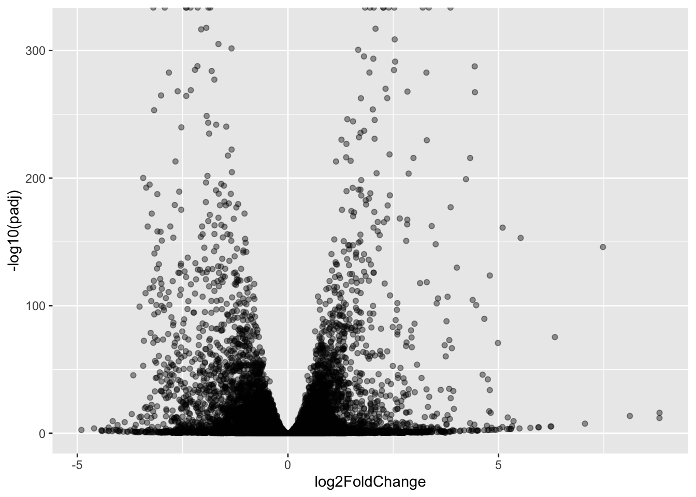
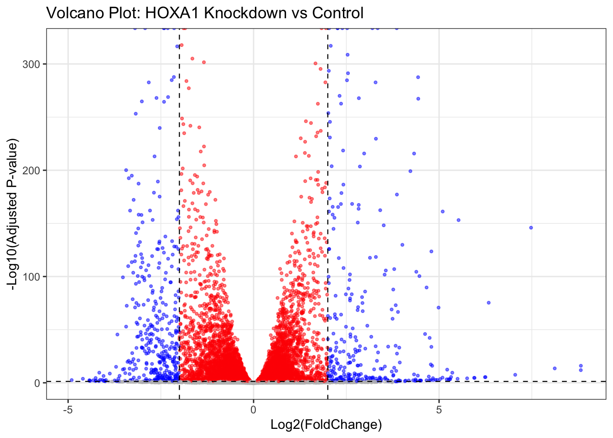

library(DESeq2)
library(ggplot2)Class 14: Pathway Analysis from RNA-Seq Results
Overview
Analysis of high-throughput biological data typically yields a large list of genes requiring further interpretation. Our goal is to use pathway analysis (also known as gene set enrichment or over-representation analysis) to reduce the complexity of interpreting these gene lists by mapping them to known biological pathways, processes, and functions.
Dataset: GSE37704 — lung fibroblasts with the HOXA1 transcription factor knocked down (hoxa1_kd) versus a control siRNA (control_sirna). HOXA1 is required for lung fibroblast and HeLa cell cycle progression.
Workflow:
- Load & clean data
- DESeq2 differential expression
- Volcano plot
- Gene annotation (Ensembl → Symbol → Entrez)
- KEGG pathway analysis (gage + pathview)
- GO term analysis
- Reactome (online)
Section 1. Differential Expression Analysis
Load the data
Note:
row.names=1tells R to use the first column as row names (sample IDs for metadata, gene IDs for counts) rather than treating them as regular data columns. Always peek at your data withhead()before doing anything — mismatched files are a very common source of bugs.
colData <- read.csv("GSE37704_metadata.csv", row.names = 1)
countData <- read.csv("GSE37704_featurecounts.csv", row.names = 1)
head(colData) condition
SRR493366 control_sirna
SRR493367 control_sirna
SRR493368 control_sirna
SRR493369 hoxa1_kd
SRR493370 hoxa1_kd
SRR493371 hoxa1_kdhead(countData) length SRR493366 SRR493367 SRR493368 SRR493369 SRR493370
ENSG00000186092 918 0 0 0 0 0
ENSG00000279928 718 0 0 0 0 0
ENSG00000279457 1982 23 28 29 29 28
ENSG00000278566 939 0 0 0 0 0
ENSG00000273547 939 0 0 0 0 0
ENSG00000187634 3214 124 123 205 207 212
SRR493371
ENSG00000186092 0
ENSG00000279928 0
ENSG00000279457 46
ENSG00000278566 0
ENSG00000273547 0
ENSG00000187634 258You’ll notice countData has a length column before the SRR sample columns — that needs to go.
Q1. Remove the $length column
Why: DESeq2 requires that the columns of
countDatamatch the rows ofcolDataexactly. Thelengthcolumn (transcript length) is not a sample — it would break that alignment. DESeq2 also does its own normalization and doesn’t need it.R tip:
[, -1]means “all columns except column 1”. Think of the minus as crossing it out.
countData <- as.matrix(countData[, -1])
head(countData) SRR493366 SRR493367 SRR493368 SRR493369 SRR493370 SRR493371
ENSG00000186092 0 0 0 0 0 0
ENSG00000279928 0 0 0 0 0 0
ENSG00000279457 23 28 29 29 28 46
ENSG00000278566 0 0 0 0 0 0
ENSG00000273547 0 0 0 0 0 0
ENSG00000187634 124 123 205 207 212 258dim(countData) # should be ~19,808 genes x 6 samples[1] 19808 6Q2. Filter genes with zero counts across all samples
Why: Genes with zero counts in every sample carry no information and can’t be statistically tested. Keeping them also inflates multiple-testing correction — your adjusted p-values get worse for every gene just because of these dead rows. Better to remove them upfront.
rowSums(countData)adds up counts across all columns for each gene. If the sum is 0, the gene was never detected anywhere.
countData <- countData[rowSums(countData) > 0, ]
head(countData) SRR493366 SRR493367 SRR493368 SRR493369 SRR493370 SRR493371
ENSG00000279457 23 28 29 29 28 46
ENSG00000187634 124 123 205 207 212 258
ENSG00000188976 1637 1831 2383 1226 1326 1504
ENSG00000187961 120 153 180 236 255 357
ENSG00000187583 24 48 65 44 48 64
ENSG00000187642 4 9 16 14 16 16dim(countData) # now ~15,280 genes[1] 15975 6Sanity check: do the files line up?
Prof tip: Always verify this before running DESeq2. A mismatched sample order is a silent bug — DESeq2 won’t throw an error, it’ll just assign the wrong condition labels to samples and give you garbage results.
all(colnames(countData) == rownames(colData))[1] TRUE# Must be TRUE before continuing!Running DESeq2
What DESeq2 does internally:
1.estimateSizeFactors— corrects for differences in sequencing depth between samples
2.estimateDispersions— models biological variability (noise) per gene
3.nbinomWaldTest— tests whether each gene’s expression differs between conditions
design = ~conditiontells DESeq2 to model expression as a function of theconditionvariable (control vs knockdown).
dds <- DESeqDataSetFromMatrix(countData = countData,
colData = colData,
design = ~condition)Warning in DESeqDataSet(se, design = design, ignoreRank): some variables in
design formula are characters, converting to factorsdds <- DESeq(dds)
ddsclass: DESeqDataSet
dim: 15975 6
metadata(1): version
assays(4): counts mu H cooks
rownames(15975): ENSG00000279457 ENSG00000187634 ... ENSG00000276345
ENSG00000271254
rowData names(22): baseMean baseVar ... deviance maxCooks
colnames(6): SRR493366 SRR493367 ... SRR493370 SRR493371
colData names(2): condition sizeFactorGet results
By default,
results()compares the last vs first level of your condition factor (alphabetically:control_sirna<hoxa1_kd). So positivelog2FoldChange= higher expression in the knockdown. UseresultsNames(dds)to confirm.
resultsNames(dds)[1] "Intercept" "condition_hoxa1_kd_vs_control_sirna"res <- results(dds)Q. Call summary() on your results
summary(res)
out of 15975 with nonzero total read count
adjusted p-value < 0.1
LFC > 0 (up) : 4349, 27%
LFC < 0 (down) : 4396, 28%
outliers [1] : 0, 0%
low counts [2] : 1237, 7.7%
(mean count < 0)
[1] see 'cooksCutoff' argument of ?results
[2] see 'independentFiltering' argument of ?results~4,351 genes up and ~4,399 genes down at padj < 0.1 — a huge response! This makes sense for a transcription factor knockdown; HOXA1 directly or indirectly controls thousands of downstream genes.
Volcano Plot
A volcano plot puts effect size (log2 fold change) on the x-axis and statistical confidence (-log10 adjusted p-value) on the y-axis. Genes in the top corners are both large and significant changes — those are the most interesting.
We use
-log10(padj)because small p-values should appear high on the plot. For example: padj = 0.001 → -log10(0.001) = 3 ✓
Basic volcano first — just to see the shape:
ggplot(as.data.frame(res)) +
aes(x = log2FoldChange,
y = -log10(padj)) +
geom_point(alpha = 0.4)Warning: Removed 1237 rows containing missing values or values outside the scale range
(`geom_point()`).
Q. Improved volcano with color coding and cutoff lines:
Color logic:
- Start everything gray (not interesting)
- Color red if
padj < 0.05(statistically significant)
- Color blue if also
|log2FoldChange| > 2(statistically significant AND biologically large)Why log2FC cutoff of 2? Because log2(4) = 2, so a cutoff of 2 on the log2 scale means the gene changed by at least 4-fold between conditions. That’s considered a large biological effect.
Note:
res$padjcontainsNAvalues for genes DESeq2 couldn’t test (outliers, extremely low counts). Always use!is.na()checks to avoid errors.
# Step 1: everything starts gray
mycols <- rep("gray", nrow(res))
# Step 2: significant genes (padj < 0.05) → red
mycols[!is.na(res$padj) & res$padj < 0.05] <- "red"
# Step 3: significant AND large fold change → blue
mycols[!is.na(res$padj) & res$padj < 0.05 & abs(res$log2FoldChange) > 2] <- "blue"
ggplot(as.data.frame(res)) +
aes(x = log2FoldChange,
y = -log10(padj)) +
geom_point(color = mycols, alpha = 0.5, size = 0.8) +
xlab("Log2(FoldChange)") +
ylab("-Log10(Adjusted P-value)") +
ggtitle("Volcano Plot: HOXA1 Knockdown vs Control") +
geom_vline(xintercept = c(-2, 2),
linetype = "dashed", color = "black", linewidth = 0.4) +
geom_hline(yintercept = -log10(0.05),
linetype = "dashed", color = "black", linewidth = 0.4) +
theme_bw()Warning: Removed 1237 rows containing missing values or values outside the scale range
(`geom_point()`).
What to notice: The plot is roughly symmetric (similar numbers up vs down). The horizontal dashed line = significance threshold. The vertical dashed lines = biological effect size threshold. Blue dots in the corners are your highest-priority candidate genes.
Adding gene annotation
Why do we need this? Our count matrix uses Ensembl IDs (e.g.
ENSG00000188976) because that’s what the genome aligner used. But KEGG pathway databases annotate genes with Entrez IDs (numeric, e.g.26155), and humans read gene symbols (e.g.NOC2L). We need to map between all three systems.
org.Hs.eg.dbis the human gene annotation database. “Hs” = Homo sapiens, “eg” = Entrez Gene.
library(AnnotationDbi)
library(org.Hs.eg.db)
# See all available identifier types:
columns(org.Hs.eg.db) [1] "ACCNUM" "ALIAS" "ENSEMBL" "ENSEMBLPROT" "ENSEMBLTRANS"
[6] "ENTREZID" "ENZYME" "EVIDENCE" "EVIDENCEALL" "GENENAME"
[11] "GENETYPE" "GO" "GOALL" "IPI" "MAP"
[16] "OMIM" "ONTOLOGY" "ONTOLOGYALL" "PATH" "PFAM"
[21] "PMID" "PROSITE" "REFSEQ" "SYMBOL" "UCSCKG"
[26] "UNIPROT"
mapIds()looks up each key in the database and returns the matching value.multiVals = "first"means: if one Ensembl ID maps to multiple symbols (rare but possible), just take the first one.
res$symbol <- mapIds(org.Hs.eg.db,
keys = row.names(res),
keytype = "ENSEMBL",
column = "SYMBOL",
multiVals = "first")
res$entrez <- mapIds(org.Hs.eg.db,
keys = row.names(res),
keytype = "ENSEMBL",
column = "ENTREZID",
multiVals = "first")
res$name <- mapIds(org.Hs.eg.db,
keys = row.names(res),
keytype = "ENSEMBL",
column = "GENENAME",
multiVals = "first")
head(res, 10)log2 fold change (MLE): condition hoxa1 kd vs control sirna
Wald test p-value: condition hoxa1 kd vs control sirna
DataFrame with 10 rows and 9 columns
baseMean log2FoldChange lfcSE stat pvalue
<numeric> <numeric> <numeric> <numeric> <numeric>
ENSG00000279457 29.913579 0.1792571 0.3248215 0.551863 5.81042e-01
ENSG00000187634 183.229650 0.4264571 0.1402658 3.040350 2.36304e-03
ENSG00000188976 1651.188076 -0.6927205 0.0548465 -12.630156 1.43993e-36
ENSG00000187961 209.637938 0.7297556 0.1318599 5.534326 3.12428e-08
ENSG00000187583 47.255123 0.0405765 0.2718928 0.149237 8.81366e-01
ENSG00000187642 11.979750 0.5428105 0.5215598 1.040744 2.97994e-01
ENSG00000188290 108.922128 2.0570638 0.1969053 10.446970 1.51281e-25
ENSG00000187608 350.716868 0.2573837 0.1027266 2.505522 1.22271e-02
ENSG00000188157 9128.439422 0.3899088 0.0467164 8.346302 7.04333e-17
ENSG00000237330 0.158192 0.7859552 4.0804729 0.192614 8.47261e-01
padj symbol entrez name
<numeric> <character> <character> <character>
ENSG00000279457 6.86555e-01 NA NA NA
ENSG00000187634 5.15718e-03 SAMD11 148398 sterile alpha motif ..
ENSG00000188976 1.76553e-35 NOC2L 26155 NOC2 like nucleolar ..
ENSG00000187961 1.13413e-07 KLHL17 339451 kelch like family me..
ENSG00000187583 9.19031e-01 PLEKHN1 84069 pleckstrin homology ..
ENSG00000187642 4.03379e-01 PERM1 84808 PPARGC1 and ESRR ind..
ENSG00000188290 1.30538e-24 HES4 57801 hes family bHLH tran..
ENSG00000187608 2.37452e-02 ISG15 9636 ISG15 ubiquitin like..
ENSG00000188157 4.21970e-16 AGRN 375790 agrin
ENSG00000237330 NA RNF223 401934 ring finger protein ..You’ll notice some
NAvalues — not every Ensembl ID maps cleanly to a gene symbol. These are often pseudogenes, non-coding RNAs, or retired IDs. Genes without an Entrez ID will be silently dropped during KEGG analysis — worth knowing.
Q. Save results ordered by adjusted p-value
res <- res[order(res$pvalue), ]
write.csv(res, file = "deseq_results.csv")
head(res)log2 fold change (MLE): condition hoxa1 kd vs control sirna
Wald test p-value: condition hoxa1 kd vs control sirna
DataFrame with 6 rows and 9 columns
baseMean log2FoldChange lfcSE stat pvalue
<numeric> <numeric> <numeric> <numeric> <numeric>
ENSG00000117519 4483.63 -2.42272 0.0600016 -40.3776 0
ENSG00000183508 2053.88 3.20196 0.0724172 44.2154 0
ENSG00000159176 5692.46 -2.31374 0.0575534 -40.2016 0
ENSG00000116016 4423.95 -1.88802 0.0431680 -43.7365 0
ENSG00000164251 2348.77 3.34451 0.0690718 48.4208 0
ENSG00000124766 2576.65 2.39229 0.0617086 38.7675 0
padj symbol entrez name
<numeric> <character> <character> <character>
ENSG00000117519 0 CNN3 1266 calponin 3
ENSG00000183508 0 TENT5C 54855 terminal nucleotidyl..
ENSG00000159176 0 CSRP1 1465 cysteine and glycine..
ENSG00000116016 0 EPAS1 2034 endothelial PAS doma..
ENSG00000164251 0 F2RL1 2150 F2R like trypsin rec..
ENSG00000124766 0 SOX4 6659 SRY-box transcriptio..Section 2. Pathway Analysis
Key concept shift: Instead of asking “is gene X significant?”, we now ask “is pathway Y significantly perturbed as a whole?”
GAGE (Generally Applicable Gene set Enrichment) tests whether genes belonging to a known pathway have consistently higher or lower fold changes than you’d expect by chance. This is more powerful than single-gene testing because:
- Biological effects are often spread across many small individual changes
- A pathway with 10 genes all nudged in the same direction is biologically meaningful, even if no single gene survives multiple testing correction on its own
KEGG pathways
library(pathview)
library(gage)
library(gageData)
data(kegg.sets.hs)
data(sigmet.idx.hs)
# Keep only signaling & metabolic pathways
# (removes "Global Maps" and "Human Disease" categories
# which aren't appropriate for this type of enrichment analysis)
kegg.sets.hs <- kegg.sets.hs[sigmet.idx.hs]
head(kegg.sets.hs, 3)$`hsa00232 Caffeine metabolism`
[1] "10" "1544" "1548" "1549" "1553" "7498" "9"
$`hsa00983 Drug metabolism - other enzymes`
[1] "10" "1066" "10720" "10941" "151531" "1548" "1549" "1551"
[9] "1553" "1576" "1577" "1806" "1807" "1890" "221223" "2990"
[17] "3251" "3614" "3615" "3704" "51733" "54490" "54575" "54576"
[25] "54577" "54578" "54579" "54600" "54657" "54658" "54659" "54963"
[33] "574537" "64816" "7083" "7084" "7172" "7363" "7364" "7365"
[41] "7366" "7367" "7371" "7372" "7378" "7498" "79799" "83549"
[49] "8824" "8833" "9" "978"
$`hsa00230 Purine metabolism`
[1] "100" "10201" "10606" "10621" "10622" "10623" "107" "10714"
[9] "108" "10846" "109" "111" "11128" "11164" "112" "113"
[17] "114" "115" "122481" "122622" "124583" "132" "158" "159"
[25] "1633" "171568" "1716" "196883" "203" "204" "205" "221823"
[33] "2272" "22978" "23649" "246721" "25885" "2618" "26289" "270"
[41] "271" "27115" "272" "2766" "2977" "2982" "2983" "2984"
[49] "2986" "2987" "29922" "3000" "30833" "30834" "318" "3251"
[57] "353" "3614" "3615" "3704" "377841" "471" "4830" "4831"
[65] "4832" "4833" "4860" "4881" "4882" "4907" "50484" "50940"
[73] "51082" "51251" "51292" "5136" "5137" "5138" "5139" "5140"
[81] "5141" "5142" "5143" "5144" "5145" "5146" "5147" "5148"
[89] "5149" "5150" "5151" "5152" "5153" "5158" "5167" "5169"
[97] "51728" "5198" "5236" "5313" "5315" "53343" "54107" "5422"
[105] "5424" "5425" "5426" "5427" "5430" "5431" "5432" "5433"
[113] "5434" "5435" "5436" "5437" "5438" "5439" "5440" "5441"
[121] "5471" "548644" "55276" "5557" "5558" "55703" "55811" "55821"
[129] "5631" "5634" "56655" "56953" "56985" "57804" "58497" "6240"
[137] "6241" "64425" "646625" "654364" "661" "7498" "8382" "84172"
[145] "84265" "84284" "84618" "8622" "8654" "87178" "8833" "9060"
[153] "9061" "93034" "953" "9533" "954" "955" "956" "957"
[161] "9583" "9615" Each pathway is a character vector of Entrez gene IDs. Notice they’re stored as strings (
"10","1544") not integers — this matters for matching later.
# Build the named fold-change vector for GAGE
# values = log2 fold changes
# names = Entrez IDs (so GAGE can match genes to pathway lists)
foldchanges <- res$log2FoldChange
names(foldchanges) <- res$entrez
head(foldchanges) 1266 54855 1465 2034 2150 6659
-2.422719 3.201955 -2.313738 -1.888019 3.344508 2.392288 # Run GAGE enrichment
# same.dir = TRUE (default): tests for pathways where genes move
# TOGETHER in one direction (all up OR all down).
# If same.dir = FALSE: tests for any perturbation regardless of direction —
# useful for metabolic pathways where some enzymes go up and others down.
keggres <- gage(foldchanges, gsets = kegg.sets.hs)
attributes(keggres)$names
[1] "greater" "less" "stats" # Top down-regulated pathways:
head(keggres$less) p.geomean stat.mean p.val
hsa04110 Cell cycle 8.995727e-06 -4.378644 8.995727e-06
hsa03030 DNA replication 9.424076e-05 -3.951803 9.424076e-05
hsa03013 RNA transport 1.375901e-03 -3.028500 1.375901e-03
hsa03440 Homologous recombination 3.066756e-03 -2.852899 3.066756e-03
hsa04114 Oocyte meiosis 3.784520e-03 -2.698128 3.784520e-03
hsa00010 Glycolysis / Gluconeogenesis 8.961413e-03 -2.405398 8.961413e-03
q.val set.size exp1
hsa04110 Cell cycle 0.001448312 121 8.995727e-06
hsa03030 DNA replication 0.007586381 36 9.424076e-05
hsa03013 RNA transport 0.073840037 144 1.375901e-03
hsa03440 Homologous recombination 0.121861535 28 3.066756e-03
hsa04114 Oocyte meiosis 0.121861535 102 3.784520e-03
hsa00010 Glycolysis / Gluconeogenesis 0.212222694 53 8.961413e-03Top hit:
hsa04110 Cell cycle— this is biologically spot-on. HOXA1 is required for cell cycle progression, so knocking it down disrupts cell cycle gene expression in a coordinated way.
# Top up-regulated pathways:
head(keggres$greater) p.geomean stat.mean p.val
hsa04640 Hematopoietic cell lineage 0.002822776 2.833362 0.002822776
hsa04630 Jak-STAT signaling pathway 0.005202070 2.585673 0.005202070
hsa00140 Steroid hormone biosynthesis 0.007255099 2.526744 0.007255099
hsa04142 Lysosome 0.010107392 2.338364 0.010107392
hsa04330 Notch signaling pathway 0.018747253 2.111725 0.018747253
hsa04916 Melanogenesis 0.019399766 2.081927 0.019399766
q.val set.size exp1
hsa04640 Hematopoietic cell lineage 0.3893570 55 0.002822776
hsa04630 Jak-STAT signaling pathway 0.3893570 109 0.005202070
hsa00140 Steroid hormone biosynthesis 0.3893570 31 0.007255099
hsa04142 Lysosome 0.4068225 118 0.010107392
hsa04330 Notch signaling pathway 0.4391731 46 0.018747253
hsa04916 Melanogenesis 0.4391731 90 0.019399766Pathview diagrams
pathview()downloads the official KEGG pathway diagram and overlays your fold change data on it. Genes are colored red (upregulated) or green (downregulated) — a traffic-light scheme. This is great for visually identifying where in a pathway the perturbation is happening.
# Cell cycle pathway:
pathview(gene.data = foldchanges,
pathway.id = "hsa04110")
# PDF version (higher quality):
pathview(gene.data = foldchanges,
pathway.id = "hsa04110",
kegg.native = FALSE)A file called
hsa04110.pathview.pngwill appear in your working directory. Open it — you should see many genes colored green (down-regulated when HOXA1 is knocked out), especially in the G1/S and G2/M transition zones.
Top 5 up-regulated pathways
keggrespathways_up <- rownames(keggres$greater)[1:5]
keggresids_up <- substr(keggrespathways_up, start = 1, stop = 8)
keggresids_up
pathview(gene.data = foldchanges,
pathway.id = keggresids_up,
species = "hsa")Q. Top 5 down-regulated pathways
Same approach as above, but pulling from
keggres$lessinstead ofkeggres$greater.
keggrespathways_dn <- rownames(keggres$less)[1:5]
keggresids_dn <- substr(keggrespathways_dn, start = 1, stop = 8)
keggresids_dn
# Expected: "hsa04110" "hsa03030" "hsa03013" "hsa04114" "hsa03440"
# = Cell cycle, DNA replication, RNA transport, Oocyte meiosis,
# Homologous recombination — all related to cell division!
pathview(gene.data = foldchanges,
pathway.id = keggresids_dn,
species = "hsa")Section 3. Gene Ontology (GO)
GO vs KEGG — what’s the difference?
KEGG focuses on biochemical pathways (signaling cascades, metabolic routes). GO is a controlled vocabulary that annotates genes with three types of terms:
- BP = Biological Process (e.g. “mitosis”, “DNA repair”)
- CC = Cellular Component (e.g. “nucleus”, “mitochondria”)
- MF = Molecular Function (e.g. “kinase activity”, “DNA binding”)
GO terms are arranged in a hierarchy from broad to specific — “biological process” → “cell cycle” → “mitotic cell cycle” → “G1/S transition”. This gives finer resolution than KEGG but also means many more terms to test (~40,000 vs ~200 KEGG pathways).
data(go.sets.hs)
data(go.subs.hs)
# Focus on Biological Process subset
gobpsets <- go.sets.hs[go.subs.hs$BP]
gobpres <- gage(foldchanges, gsets = gobpsets)
lapply(gobpres, head)$greater
p.geomean stat.mean p.val
GO:0007156 homophilic cell adhesion 8.519724e-05 3.824205 8.519724e-05
GO:0002009 morphogenesis of an epithelium 1.396681e-04 3.653886 1.396681e-04
GO:0048729 tissue morphogenesis 1.432451e-04 3.643242 1.432451e-04
GO:0007610 behavior 1.925222e-04 3.565432 1.925222e-04
GO:0060562 epithelial tube morphogenesis 5.932837e-04 3.261376 5.932837e-04
GO:0035295 tube development 5.953254e-04 3.253665 5.953254e-04
q.val set.size exp1
GO:0007156 homophilic cell adhesion 0.1951953 113 8.519724e-05
GO:0002009 morphogenesis of an epithelium 0.1951953 339 1.396681e-04
GO:0048729 tissue morphogenesis 0.1951953 424 1.432451e-04
GO:0007610 behavior 0.1967577 426 1.925222e-04
GO:0060562 epithelial tube morphogenesis 0.3565320 257 5.932837e-04
GO:0035295 tube development 0.3565320 391 5.953254e-04
$less
p.geomean stat.mean p.val
GO:0048285 organelle fission 1.536227e-15 -8.063910 1.536227e-15
GO:0000280 nuclear division 4.286961e-15 -7.939217 4.286961e-15
GO:0007067 mitosis 4.286961e-15 -7.939217 4.286961e-15
GO:0000087 M phase of mitotic cell cycle 1.169934e-14 -7.797496 1.169934e-14
GO:0007059 chromosome segregation 2.028624e-11 -6.878340 2.028624e-11
GO:0000236 mitotic prometaphase 1.729553e-10 -6.695966 1.729553e-10
q.val set.size exp1
GO:0048285 organelle fission 5.841698e-12 376 1.536227e-15
GO:0000280 nuclear division 5.841698e-12 352 4.286961e-15
GO:0007067 mitosis 5.841698e-12 352 4.286961e-15
GO:0000087 M phase of mitotic cell cycle 1.195672e-11 362 1.169934e-14
GO:0007059 chromosome segregation 1.658603e-08 142 2.028624e-11
GO:0000236 mitotic prometaphase 1.178402e-07 84 1.729553e-10
$stats
stat.mean exp1
GO:0007156 homophilic cell adhesion 3.824205 3.824205
GO:0002009 morphogenesis of an epithelium 3.653886 3.653886
GO:0048729 tissue morphogenesis 3.643242 3.643242
GO:0007610 behavior 3.565432 3.565432
GO:0060562 epithelial tube morphogenesis 3.261376 3.261376
GO:0035295 tube development 3.253665 3.253665Reading the results:
- UP (greater): homophilic cell adhesion, epithelium development → without HOXA1, cells may shift toward an adhesion/epithelial phenotype
- DOWN (less): M phase, organelle fission, nuclear division, mitosis → cells are failing to divide
Notice GO terms are more specific than KEGG names. “M phase of mitotic cell cycle” pinpoints exactly which part of cell division is failing, whereas KEGG just said “Cell Cycle”. Both tell the same story — HOXA1 loss disrupts cell division — but at different levels of resolution.
Section 4. Reactome Analysis
What is Reactome? Another pathway database, maintained by EMBL-EBI. Key differences from KEGG:
- More granular reaction-level detail (individual biochemical steps)
- Uses a hypergeometric test (Fisher’s exact test on gene overlap) rather than the fold-change-based approach GAGE uses
- Updated more frequently, with richer human pathway coverage
# Export significant genes (padj <= 0.05) for upload to Reactome
sig_genes <- res[res$padj <= 0.05 & !is.na(res$padj), "symbol"]
print(paste("Total number of significant genes:", length(sig_genes)))[1] "Total number of significant genes: 8147"write.table(sig_genes,
file = "significant_genes.txt",
row.names = FALSE,
col.names = FALSE,
quote = FALSE)Online steps:
1. Go to https://reactome.org/PathwayBrowser/#TOOL=AT
2. Uploadsignificant_genes.txt
3. Select “Project to Humans” → click “Analyze”
4. Screenshot your results for Gradescope Q4
Q. What pathway has the most significant Entities p-value? Do results match KEGG? What factors could cause differences?
Most significant pathway: Typically “Cell Cycle” or a sub-pathway like “Mitotic Cell Cycle” — consistent with KEGG.
Do they match? Yes, broadly. Both databases converge on cell cycle disruption as the dominant consequence of HOXA1 loss.
Why might results differ between methods?
Different gene set curation — KEGG and Reactome define pathway membership independently. A gene counted in KEGG’s “Cell Cycle” may not be in Reactome’s, or vice versa.
Different statistical methods — GAGE uses fold changes with a two-sample t-test approach, using all genes as background. Reactome uses a hypergeometric test on your significant gene list only. Different backgrounds = different p-values.
Different ID mapping — Slight differences in how Ensembl IDs are translated to gene symbols can include or exclude edge-case genes.
Pathway hierarchy — Reactome is more granular; what KEGG calls “Cell Cycle” may be split into 10 sub-pathways in Reactome, changing which exact term appears most significant.
Database update frequency — KEGG and Reactome are updated independently, so gene membership in the same named pathway can differ by version.
Section 5. GO Online (Optional)
Go to http://www.geneontology.org/page/go-enrichment-analysis, paste your significant gene list, select “biological process” and “homo sapiens”, and click submit.
Q. What pathway has the most significant Entities p-value? Do results match KEGG?
Expect similar results to the R-based GO analysis above — M phase / mitotic cell cycle terms will dominate the down-regulated side. Differences from KEGG arise for the same reasons outlined in Section 4.
Session Information
Always run this at the end of every analysis. Bioinformatics results depend heavily on package versions. Recording
sessionInfo()means you (or a reviewer) can reproduce your exact analysis months or years later. Include this in every report you submit or publish.
sessionInfo()R version 4.5.3 (2026-03-11)
Platform: aarch64-apple-darwin20
Running under: macOS Tahoe 26.5
Matrix products: default
BLAS: /Library/Frameworks/R.framework/Versions/4.5-arm64/Resources/lib/libRblas.0.dylib
LAPACK: /Library/Frameworks/R.framework/Versions/4.5-arm64/Resources/lib/libRlapack.dylib; LAPACK version 3.12.1
locale:
[1] en_US.UTF-8/en_US.UTF-8/en_US.UTF-8/C/en_US.UTF-8/en_US.UTF-8
time zone: America/Los_Angeles
tzcode source: internal
attached base packages:
[1] stats4 stats graphics grDevices utils datasets methods
[8] base
other attached packages:
[1] gageData_2.48.0 gage_2.60.0
[3] pathview_1.50.0 org.Hs.eg.db_3.22.0
[5] AnnotationDbi_1.72.0 ggplot2_4.0.2
[7] DESeq2_1.50.2 SummarizedExperiment_1.40.0
[9] Biobase_2.70.0 MatrixGenerics_1.22.0
[11] matrixStats_1.5.0 GenomicRanges_1.62.1
[13] Seqinfo_1.0.0 IRanges_2.44.0
[15] S4Vectors_0.48.1 BiocGenerics_0.56.0
[17] generics_0.1.4
loaded via a namespace (and not attached):
[1] KEGGREST_1.50.0 gtable_0.3.6 xfun_0.57
[4] htmlwidgets_1.6.4 lattice_0.22-9 bitops_1.0-9
[7] vctrs_0.7.2 tools_4.5.3 parallel_4.5.3
[10] tibble_3.3.1 RSQLite_3.52.0 blob_1.3.0
[13] pkgconfig_2.0.3 Matrix_1.7-4 RColorBrewer_1.1-3
[16] S7_0.2.1 graph_1.88.1 lifecycle_1.0.5
[19] compiler_4.5.3 farver_2.1.2 Biostrings_2.78.0
[22] codetools_0.2-20 htmltools_0.5.9 RCurl_1.98-1.18
[25] yaml_2.3.12 GO.db_3.22.0 crayon_1.5.3
[28] pillar_1.11.1 BiocParallel_1.44.0 DelayedArray_0.36.1
[31] cachem_1.1.0 abind_1.4-8 tidyselect_1.2.1
[34] locfit_1.5-9.12 digest_0.6.39 dplyr_1.2.1
[37] labeling_0.4.3 fastmap_1.2.0 grid_4.5.3
[40] cli_3.6.5 SparseArray_1.10.10 magrittr_2.0.5
[43] S4Arrays_1.10.1 XML_3.99-0.23 withr_3.0.2
[46] scales_1.4.0 bit64_4.6.0-1 rmarkdown_2.31
[49] XVector_0.50.0 httr_1.4.8 bit_4.6.0
[52] otel_0.2.0 png_0.1-9 memoise_2.0.1
[55] evaluate_1.0.5 knitr_1.51 rlang_1.1.7
[58] Rcpp_1.1.1 glue_1.8.0 DBI_1.3.0
[61] Rgraphviz_2.54.0 KEGGgraph_1.70.0 rstudioapi_0.18.0
[64] jsonlite_2.0.0 R6_2.6.1